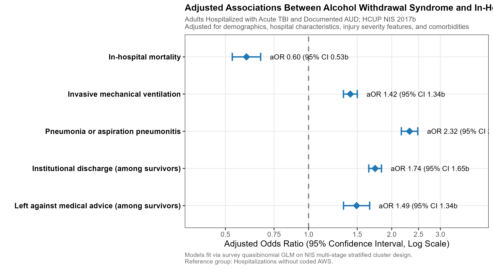
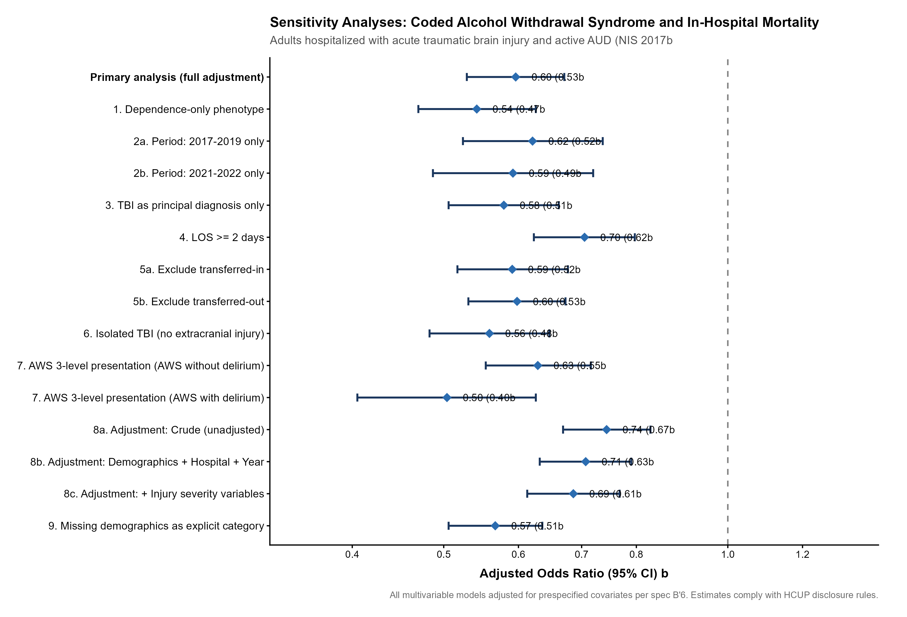
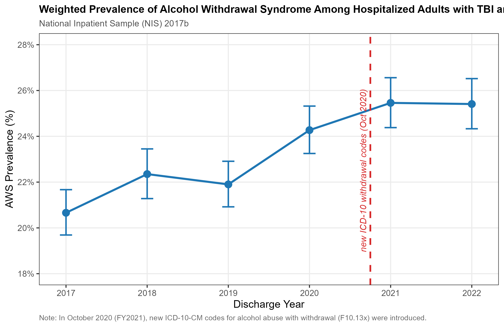

| Concept | Code | Match | Description | Source |
|---|---|---|---|---|
| Acute TBI | S06 | prefix | Intracranial injury (requires 7th char A and len 7) | ICD-10-CM / CMS |
| Active AUD | F101 | prefix | Alcohol abuse (exclude remission-only F1011) | ICD-10-CM / CMS |
| Active AUD | F102 | prefix | Alcohol dependence (exclude remission-only F1021) | ICD-10-CM / CMS |
| AUD Remission | F1011 | exact | Alcohol abuse in remission | ICD-10-CM / CMS |
| AUD Remission | F1021 | exact | Alcohol dependence in remission | ICD-10-CM / CMS |
| AWS Main | F10230 | exact | Alcohol dependence with withdrawal, uncomplicated | ICD-10-CM / CMS |
| AWS Main | F10231 | exact | Alcohol dependence with withdrawal delirium | ICD-10-CM / CMS |
| AWS Main | F10232 | exact | Alcohol dependence with withdrawal with perceptual disturbance | ICD-10-CM / CMS |
| AWS Main | F10239 | exact | Alcohol dependence with withdrawal, unspecified | ICD-10-CM / CMS |
| AWS Main | F10130 | exact | Alcohol abuse with withdrawal, uncomplicated | ICD-10-CM / CMS |
| AWS Main | F10131 | exact | Alcohol abuse with withdrawal delirium | ICD-10-CM / CMS |
| AWS Main | F10132 | exact | Alcohol abuse with withdrawal with perceptual disturbance | ICD-10-CM / CMS |
| AWS Main | F10139 | exact | Alcohol abuse with withdrawal, unspecified | ICD-10-CM / CMS |
| Invasive Mechanical Ventilation | 5A1935Z | exact | Respiratory ventilation, less than 24 consecutive hours | ICD-10-PCS |
| Invasive Mechanical Ventilation | 5A1945Z | exact | Respiratory ventilation, 24-96 consecutive hours | ICD-10-PCS |
| Invasive Mechanical Ventilation | 5A1955Z | exact | Respiratory ventilation, greater than 96 consecutive hours | ICD-10-PCS |
| Pneumonia | J12 | prefix | Pneumonia | ICD-10-CM / CMS |
| Pneumonia | J13 | prefix | Pneumonia | ICD-10-CM / CMS |
| Pneumonia | J14 | prefix | Pneumonia | ICD-10-CM / CMS |
| Pneumonia | J15 | prefix | Pneumonia | ICD-10-CM / CMS |
| Pneumonia | J16 | prefix | Pneumonia | ICD-10-CM / CMS |
| Pneumonia | J17 | prefix | Pneumonia | ICD-10-CM / CMS |
| Pneumonia | J18 | prefix | Pneumonia | ICD-10-CM / CMS |
| Aspiration Pneumonitis | J690 | exact | Pneumonitis due to inhalation of food and vomit | ICD-10-CM / CMS |
| Other SUD | F11 | prefix | Other substance use disorder (excluding remission-only) | ICD-10-CM / CMS |
| Other SUD | F12 | prefix | Other substance use disorder (excluding remission-only) | ICD-10-CM / CMS |
| Other SUD | F13 | prefix | Other substance use disorder (excluding remission-only) | ICD-10-CM / CMS |
| Other SUD | F14 | prefix | Other substance use disorder (excluding remission-only) | ICD-10-CM / CMS |
| Other SUD | F15 | prefix | Other substance use disorder (excluding remission-only) | ICD-10-CM / CMS |
| Other SUD | F16 | prefix | Other substance use disorder (excluding remission-only) | ICD-10-CM / CMS |
| Other SUD | F18 | prefix | Other substance use disorder (excluding remission-only) | ICD-10-CM / CMS |
| Other SUD | F19 | prefix | Other substance use disorder (excluding remission-only) | ICD-10-CM / CMS |
| Other SUD Remission | F1111 | exact | Other substance use disorder in remission | ICD-10-CM / CMS |
| Other SUD Remission | F1121 | exact | Other substance use disorder in remission | ICD-10-CM / CMS |
| Other SUD Remission | F1211 | exact | Other substance use disorder in remission | ICD-10-CM / CMS |
| Other SUD Remission | F1221 | exact | Other substance use disorder in remission | ICD-10-CM / CMS |
| Other SUD Remission | F1311 | exact | Other substance use disorder in remission | ICD-10-CM / CMS |
| Other SUD Remission | F1321 | exact | Other substance use disorder in remission | ICD-10-CM / CMS |
| Other SUD Remission | F1411 | exact | Other substance use disorder in remission | ICD-10-CM / CMS |
| Other SUD Remission | F1421 | exact | Other substance use disorder in remission | ICD-10-CM / CMS |
| Other SUD Remission | F1511 | exact | Other substance use disorder in remission | ICD-10-CM / CMS |
| Other SUD Remission | F1521 | exact | Other substance use disorder in remission | ICD-10-CM / CMS |
| Other SUD Remission | F1611 | exact | Other substance use disorder in remission | ICD-10-CM / CMS |
| Other SUD Remission | F1621 | exact | Other substance use disorder in remission | ICD-10-CM / CMS |
| Other SUD Remission | F1811 | exact | Other substance use disorder in remission | ICD-10-CM / CMS |
| Other SUD Remission | F1821 | exact | Other substance use disorder in remission | ICD-10-CM / CMS |
| Other SUD Remission | F1911 | exact | Other substance use disorder in remission | ICD-10-CM / CMS |
| Other SUD Remission | F1921 | exact | Other substance use disorder in remission | ICD-10-CM / CMS |
| Liver Disease | K70 | prefix | Any liver disease (K70-K77) | ICD-10-CM / CMS |
| Liver Disease | K71 | prefix | Any liver disease (K70-K77) | ICD-10-CM / CMS |
| Liver Disease | K72 | prefix | Any liver disease (K70-K77) | ICD-10-CM / CMS |
| Liver Disease | K73 | prefix | Any liver disease (K70-K77) | ICD-10-CM / CMS |
| Liver Disease | K74 | prefix | Any liver disease (K70-K77) | ICD-10-CM / CMS |
| Liver Disease | K75 | prefix | Any liver disease (K70-K77) | ICD-10-CM / CMS |
| Liver Disease | K76 | prefix | Any liver disease (K70-K77) | ICD-10-CM / CMS |
| Liver Disease | K77 | prefix | Any liver disease (K70-K77) | ICD-10-CM / CMS |
| Alcoholic Liver Disease | K70 | prefix | Alcoholic liver disease | ICD-10-CM / CMS |
| Skull Fracture | S020 | prefix | Fracture of vault of skull (7th char A or B) | ICD-10-CM / CMS |
| Skull Fracture | S021 | prefix | Fracture of base of skull (7th char A or B) | ICD-10-CM / CMS |
| Skull Fracture | S0291 | prefix | Unspecified fracture of skull (7th char A or B) | ICD-10-CM / CMS |
| Extracranial Injury | S10-S99 | range | Injury outside head (7th char A, B, or C) | ICD-10-CM / CMS |
| Tobacco Use | F17 | prefix | Nicotine dependence | ICD-10-CM / CMS |
| Tobacco Use | Z720 | exact | Tobacco use | ICD-10-CM / CMS |
| Tobacco Use | Z87891 | exact | Personal history of nicotine dependence | ICD-10-CM / CMS |
Alcohol Withdrawal Syndrome in Adult Traumatic Brain Injury with Alcohol Use Disorder
National Estimates of In-Hospital Mortality, Respiratory Complications, and Resource Utilization (NIS 2017–2022)
1 Study at a Glance
- Clinical Question: Among adult hospitalizations with acute traumatic brain injury (TBI) and active alcohol use disorder (AUD), how is coded alcohol withdrawal syndrome (AWS) associated with in-hospital mortality, respiratory complications, discharge destination, and resource use?
- Data Source: Healthcare Cost and Utilization Project (HCUP) National Inpatient Sample (NIS), calendar years 2017 through 2022.
- Target Population: Adult hospitalizations (aged \(\ge 18\) years) presenting with concurrent acute intracranial injury (ICD-10-CM
S06...A) and documented active alcohol abuse or dependence (F10.1,F10.2). - Principal Finding: Coded AWS is documented in 1.1654^{4} sampled hospitalizations (projecting to 58,270 national hospitalizations, or 23.3% of the cohort). Coded AWS was associated with significantly lower in-hospital mortality (adjusted OR 0.60 (0.53–0.67), adjusted risk difference -2.04% (-2.46 to -1.63%)), while being concurrently associated with markedly higher odds of invasive mechanical ventilation (adjusted OR 1.42 (1.34–1.50)), pneumonia or aspiration (adjusted OR 2.32 (2.17–2.49)), institutional discharge (adjusted OR 1.74 (1.65–1.84)), substantially longer hospital stays (adjusted mean 11.43 days (11.15–11.72) vs 6.74 days (6.61–6.87)), and higher hospital costs (adjusted mean $42,702 ($41,669–$43,735) vs $29,159 ($28,671–$29,647)).
2 How to Read This Report
This report presents survey-weighted epidemiologic findings from the complex sampling design of the National Inpatient Sample. The following definitions clarify the statistical metrics presented throughout:
- Unweighted Sample Count (\(n\)): The literal number of unique discharge records sampled in the NIS database meeting study criteria.
- Weighted National Estimate (\(N\)): The projected national estimate representing all inpatient hospitalizations across non-federal US hospitals, calculated by applying HCUP discharge weights (
DISCWT). - Hospitalizations: NIS records discharge-level encounters, not individuals. Admissions cannot be linked across transfers or readmissions, so counts refer to hospitalizations.
- Odds Ratio (OR): The ratio of the odds of an outcome occurring in hospitalizations with coded AWS compared with those without coded AWS. An OR below 1 indicates lower odds; an OR above 1 indicates higher odds.
- Adjusted Percentage / Predictive Margin: The standardized probability of an outcome estimated from multivariable survey models if the entire population had AWS versus No AWS, holding all baseline demographic, hospital, and injury severity confounders constant.
- 95% Confidence Interval (95% CI): The plausible range of values containing the true population parameter with 95% statistical confidence, accounting for complex survey clustering and stratification.
- Cell Suppression (“\(\le 10\)” / “Masked”): To comply with the HCUP Data Use Agreement (DUA) and protect patient privacy, any cell derived from an unweighted sample size of 10 or fewer discharges is masked, along with complementary cell suppression where needed.
3 Methods in Plain Words
3.1 Study Population and Design
We identified adult inpatient hospitalizations (aged \(\ge 18\) years) in the 2017–2022 NIS with acute traumatic brain injury and active alcohol use disorder. The analysis accounted for hospitals as sampling units and sampling strata within each year using easyNIS and survey.
To prevent overadjustment and avoid circular conditioning, multivariable models controlled for prespecified baseline covariates: age (per 10 years), sex, race/ethnicity, primary payer, median ZIP code income quartile, admission year, hospital region, bedsize, teaching status, TBI subtype hierarchy, skull fracture, extracranial injury, TBI as principal diagnosis, chronic comorbidity burden (AHRQ Elixhauser Refined chronic count excluding acute trauma and alcohol sequelae), liver disease, and other substance use disorders. Downstream interventions (e.g., ventilation, length of stay) were not adjusted for in mortality models.
3.2 Code Definitions
4 Cohort Attrition and Sample Derivation
The derivation of the final analytic cohort across the six-year sampling frame (2017–2022) is detailed below.
| Step | Criterion | Sample Count (n) | Dropped (n) | Weighted Total (N) | Cumulative Retained |
|---|---|---|---|---|---|
| 0 | All discharges | 41,065,286 | 0 | 205,326,348 | 100.00% |
| 1 | !is.na(AGE) & AGE >= 18 | 34,972,964 | 6,092,322 | 174,864,748 | 85.16% |
| 2 | flag_tbi | 340,749 | 34,632,215 | 1,703,745 | 0.83% |
| 3 | flag_aud | 49,941 | 290,808 | 249,705 | 0.12% |
| 4 | !is.na(DIED) & DIED %in% c(0, 1) | 49,914 | 27 | 249,570 | 0.12% |
From an initial pool of 41,065,286 sampled discharges across 2017–2022, restricting to adults aged \(\ge 18\) years identified 34,972,964 hospitalizations. Requiring an acute initial encounter code for TBI isolated 340,749 hospitalizations. Among these, 49,941 had documented active alcohol abuse or dependence. Excluding 27 records with missing in-hospital mortality status yielded the final analytic cohort of 49,914 unweighted hospitalizations, projecting to 249,570 national hospitalizations across 7,701 hospital-years.
5 Baseline Characteristics (Table 1)
Baseline demographic, clinical, and hospital characteristics stratified by alcohol withdrawal syndrome status are presented below.
| Characteristic | Overall (n = 49914) | No AWS (n = 38260) | AWS (n = 11654) | p_value |
|---|---|---|---|---|
| Age, years | 53 (38, 63) | 52 (36, 63) | 56 (46, 64) | <0.001 |
| Sex | NA | NA | NA | <0.001 |
| Male | Masked | Masked | Masked | Masked |
| Female | Masked | Masked | Masked | Masked |
| Unknown | Masked | Masked | Masked | Masked |
| Race/ethnicity | NA | NA | NA | <0.001 |
| White | 65% | 63% | 71% | NA |
| Black | 13% | 14% | 9.9% | NA |
| Hispanic | 14% | 15% | 13% | NA |
| Asian or Pacific Islander | 1.4% | 1.5% | 1.1% | NA |
| Native American | 2.3% | 2.2% | 2.5% | NA |
| Other | 3.9% | 4.0% | 3.3% | NA |
| Unknown | 9,510 | 7,565 | 1,945 | NA |
| Primary expected payer | NA | NA | NA | <0.001 |
| Medicare | 25% | 24% | 27% | NA |
| Medicaid | 29% | 27% | 34% | NA |
| Private including HMO | 28% | 30% | 24% | NA |
| Self-pay | 12% | 12% | 9.5% | NA |
| No charge | 1.1% | 1.1% | 1.0% | NA |
| Other | 4.8% | 4.8% | 4.9% | NA |
| Unknown | 770 | 625 | 145 | NA |
| Median household income quartile for patient ZIP code | NA | NA | NA | <0.001 |
| Q1 | 31% | 32% | 29% | NA |
| Q2 | 25% | 25% | 24% | NA |
| Q3 | 24% | 24% | 25% | NA |
| Q4 | 20% | 19% | 22% | NA |
| Unknown | 10,015 | 7,010 | 3,005 | NA |
| Calendar era | NA | NA | NA | <0.001 |
| 2017–2019 | 50% | 51% | 46% | NA |
| 2020 | 17% | 17% | 18% | NA |
| 2021–2022 | 33% | 32% | 36% | NA |
| Hospital census region | NA | NA | NA | <0.001 |
| Northeast | 17% | 16% | 19% | NA |
| Midwest | 23% | 24% | 22% | NA |
| South | 33% | 33% | 30% | NA |
| West | 27% | 27% | 29% | NA |
| Hospital bed size | NA | NA | NA | 0.001 |
| Small | 10% | 9.9% | 11% | NA |
| Medium | 26% | 26% | 26% | NA |
| Large | 64% | 64% | 62% | NA |
| Hospital location and teaching status | NA | NA | NA | <0.001 |
| Rural | 2.2% | 2.2% | 2.4% | NA |
| Urban, non-teaching | 9.8% | 9.4% | 11% | NA |
| Urban, teaching | 88% | 88% | 87% | NA |
| TBI injury subtype | NA | NA | NA | <0.001 |
| Concussion, other or unspecified only | 24% | 25% | 19% | NA |
| Diffuse injury or brain compression | 7.0% | 6.9% | 7.2% | NA |
| Epidural hemorrhage | 4.1% | 4.2% | 3.8% | NA |
| Subdural hemorrhage | 41% | 39% | 47% | NA |
| Contusion/focal, SAH, or edema | 24% | 24% | 22% | NA |
| Skull fracture | 20% | 22% | 16% | <0.001 |
| Any injury code outside the head (initial encounter) | 45% | 48% | 38% | <0.001 |
| TBI as principal diagnosis | 68% | 68% | 67% | 0.004 |
| Chronic comorbidity count (Elixhauser refined) | NA | NA | NA | <0.001 |
| 0 | 35% | 39% | 23% | NA |
| 1 | 29% | 28% | 31% | NA |
| 2 | 19% | 17% | 24% | NA |
| >=3 | 17% | 16% | 22% | NA |
| Hypertension | 44% | 41% | 54% | <0.001 |
| Diabetes mellitus | 11% | 11% | 11% | 0.5 |
| Chronic pulmonary disease | 12% | 12% | 14% | <0.001 |
| Heart failure | 4.9% | 4.3% | 6.7% | <0.001 |
| Chronic kidney disease | 3.1% | 3.2% | 3.0% | 0.4 |
| Depression | 13% | 12% | 18% | <0.001 |
| Obesity | 5.6% | 5.6% | 5.4% | 0.5 |
| Any liver disease (K70–K77) | 14% | 10% | 26% | <0.001 |
| Alcoholic liver disease (K70) | 8.6% | 5.9% | 18% | <0.001 |
| Other substance use disorder | 16% | 17% | 15% | <0.001 |
| Current or past tobacco/nicotine use | 45% | 44% | 47% | <0.001 |
6 Clinical Outcomes
6.1 Crude Event Rates
Unadjusted event counts and weighted incidence rates across primary and secondary clinical endpoints are presented below.
| Outcome | No AWS Events | No AWS Rate (%) | AWS Events | AWS Rate (%) | Crude OR / Ratio (95% CI) | p-value |
|---|---|---|---|---|---|---|
| In-hospital mortality | 2028 | 5.30 | 466 | 4.00 | 0.74 (0.67–0.83) | <0.001 |
| Invasive mechanical ventilation | 8466 | 22.13 | 3030 | 26.00 | 1.24 (1.18–1.30) | <0.001 |
| Pneumonia or aspiration pneumonitis | 3000 | 7.84 | 2097 | 17.99 | 2.58 (2.43–2.74) | <0.001 |
| Pneumonia (alone) | 1774 | 4.64 | 1128 | 9.68 | 2.20 (2.04–2.38) | <0.001 |
| Aspiration pneumonitis (alone) | 1447 | 3.78 | 1190 | 10.21 | 2.89 (2.67–3.14) | <0.001 |
| Institutional discharge (among survivors) | 9310 | 25.70 | 4462 | 39.88 | 1.92 (1.83–2.01) | <0.001 |
| Left against medical advice (among survivors) | 1505 | 4.15 | 630 | 5.63 | 1.38 (1.25–1.52) | <0.001 |
| Length of stay, days | NA | 3.00 | NA | 8.00 | 1.80 (1.75–1.86) | <0.001 |
| Hospital cost (2022 USD) | NA | 16326.00 | NA | 25814.00 | 1.44 (1.41–1.48) | <0.001 |
6.2 Multivariable Adjusted Outcomes
Multivariable survey regression models adjusted for demographic, hospital, injury, and chronic comorbidity characteristics. The table reports model sample size and event count for each outcome.
| Outcome | Crude Estimate | Adjusted Estimate (95% CI) | Adjusted No AWS (%) | Adjusted AWS (%) | Adjusted Difference | n used | Events used | p-value |
|---|---|---|---|---|---|---|---|---|
| In-hospital mortality | 0.74 (0.67–0.83) | 0.60 (0.53–0.67) | 5.39% (5.14–5.63%) | 3.34% (3.02–3.67%) | -2.04% (-2.46 to -1.63%) | 45949 | 2217 | <0.001 |
| Invasive mechanical ventilation | 1.24 (1.18–1.30) | 1.42 (1.34–1.50) | 21.36% (20.89–21.83%) | 27.33% (26.40–28.26%) | +5.97% (+4.94 to +7.00%) | 45949 | 10431 | <0.001 |
| Pneumonia or aspiration pneumonitis | 2.58 (2.43–2.74) | 2.32 (2.17–2.49) | 8.06% (7.76–8.36%) | 16.55% (15.81–17.29%) | +8.49% (+7.70 to +9.29%) | 45949 | 4681 | <0.001 |
| Institutional discharge (among survivors) | 1.92 (1.83–2.01) | 1.74 (1.65–1.84) | 26.65% (26.17–27.14%) | 37.03% (36.11–37.94%) | +10.38% (+9.35 to +11.40%) | 43728 | 12777 | <0.001 |
| Left against medical advice (among survivors) | 1.38 (1.25–1.52) | 1.49 (1.34–1.66) | 3.88% (3.67–4.09%) | 5.63% (5.16–6.10%) | +1.75% (+1.23 to +2.27%) | 43728 | 1873 | <0.001 |
| Length of stay (days) | 1.80 (1.75–1.86) | 1.70 (1.64–1.75) | 6.74 days (6.61–6.87) | 11.43 days (11.15–11.72) | +4.69 days (+4.38 to +5.00) | 45948 | NA | <0.001 |
| Hospital cost (2022 USD) | 1.44 (1.41–1.48) | 1.46 (1.42–1.51) | $29,159 ($28,671–$29,647) | $42,702 ($41,669–$43,735) | +$13,543 (+$12,456 to +$14,630) | 45486 | NA | <0.001 |
6.3 Forest Plot of Adjusted Associations

7 Length of Stay and Hospital Costs
Coded alcohol withdrawal syndrome was associated with substantial resource utilization:
- Length of Stay: Hospitalizations with coded AWS had an adjusted mean length of stay of 11.43 days (11.15–11.72) compared with 6.74 days (6.61–6.87) for those without AWS—an adjusted difference of +4.69 days (+4.38 to +5.00) (adjusted count ratio 1.70 (1.64–1.75), $p <0.001).
- Hospital Costs (2022 USD): Adjusted mean hospital costs were $42,702 ($41,669–$43,735) for AWS hospitalizations compared with $29,159 ($28,671–$29,647) for non-AWS hospitalizations—an adjusted mean difference of +$13,543 (+$12,456 to +$14,630) per hospitalization (adjusted cost ratio 1.46 (1.42–1.51), $p <0.001).
8 Sensitivity Analyses
To assess the robustness of these findings across alternative clinical definitions, temporal strata, and potential selection biases, nine prespecified sensitivity analyses were conducted for in-hospital mortality and key secondary endpoints.
| Analysis | Outcome | Group | Sample Size | Events | Adjusted OR (95% CI) | p-value |
|---|---|---|---|---|---|---|
| Primary analysis (full adjustment) | In-hospital mortality | AWS | 45949 | 2217 | 0.60 (0.53<U+2013>0.67) | <0.001 |
| Primary analysis (full adjustment) | Invasive mechanical ventilation | AWS | 45949 | 10431 | 1.42 (1.34<U+2013>1.50) | <0.001 |
| Primary analysis (full adjustment) | Pneumonia or aspiration pneumonitis | AWS | 45949 | 4681 | 2.32 (2.17<U+2013>2.48) | <0.001 |
| 1. Dependence-only phenotype | In-hospital mortality | AWS | 17838 | 927 | 0.54 (0.47<U+2013>0.63) | <0.001 |
| 1. Dependence-only phenotype | Invasive mechanical ventilation | AWS | 17838 | 4152 | 1.43 (1.32<U+2013>1.54) | <0.001 |
| 1. Dependence-only phenotype | Pneumonia or aspiration pneumonitis | AWS | 17838 | 2521 | 2.12 (1.92<U+2013>2.33) | <0.001 |
| 2a. Period: 2017-2019 only | In-hospital mortality | AWS | 22834 | 1044 | 0.62 (0.52<U+2013>0.74) | <0.001 |
| 2b. Period: 2021-2022 only | In-hospital mortality | AWS | 15120 | 800 | 0.59 (0.49<U+2013>0.72) | <0.001 |
| 3. TBI as principal diagnosis only | In-hospital mortality | AWS | 31234 | 1798 | 0.58 (0.51<U+2013>0.66) | <0.001 |
| 4. LOS >= 2 days | In-hospital mortality | AWS | 37494 | 1657 | 0.70 (0.62<U+2013>0.80) | <0.001 |
| 5a. Exclude transferred-in | In-hospital mortality | AWS | 38511 | 1732 | 0.59 (0.52<U+2013>0.68) | <0.001 |
| 5b. Exclude transferred-out | In-hospital mortality | AWS | 44912 | 2217 | 0.60 (0.53<U+2013>0.67) | <0.001 |
| 6. Isolated TBI (no extracranial injury) | In-hospital mortality | AWS | 25152 | 1372 | 0.56 (0.48<U+2013>0.65) | <0.001 |
| 7. AWS 3-level presentation | In-hospital mortality | AWS without delirium | 45949 | 2217 | 0.63 (0.55<U+2013>0.72) | <0.001 |
| 7. AWS 3-level presentation | In-hospital mortality | AWS with delirium | 45949 | 2217 | 0.50 (0.40<U+2013>0.63) | <0.001 |
| 8a. Adjustment: Crude (unadjusted) | In-hospital mortality | AWS | 49914 | 2494 | 0.74 (0.67<U+2013>0.83) | <0.001 |
| 8a. Adjustment: Crude (unadjusted) | Invasive mechanical ventilation | AWS | 49914 | 11496 | 1.24 (1.18<U+2013>1.30) | <0.001 |
| 8a. Adjustment: Crude (unadjusted) | Pneumonia or aspiration pneumonitis | AWS | 49914 | 5097 | 2.58 (2.43<U+2013>2.74) | <0.001 |
| 8b. Adjustment: Demographics + Hospital + Year | In-hospital mortality | AWS | 45949 | 2217 | 0.71 (0.63<U+2013>0.79) | <0.001 |
| 8c. Adjustment: + Injury severity variables | In-hospital mortality | AWS | 45949 | 2217 | 0.69 (0.61<U+2013>0.77) | <0.001 |
| 8d. Adjustment: Full multivariable set | In-hospital mortality | AWS | 45949 | 2217 | 0.60 (0.53<U+2013>0.67) | <0.001 |
| 8d. Adjustment: Full multivariable set | Invasive mechanical ventilation | AWS | 45949 | 10431 | 1.42 (1.34<U+2013>1.50) | <0.001 |
| 8d. Adjustment: Full multivariable set | Pneumonia or aspiration pneumonitis | AWS | 45949 | 4681 | 2.32 (2.17<U+2013>2.48) | <0.001 |
| 9. Missing demographics as explicit category | In-hospital mortality | AWS | 49891 | 2491 | 0.57 (0.51<U+2013>0.64) | <0.001 |
| 9. Missing demographics as explicit category | Invasive mechanical ventilation | AWS | 49891 | 11484 | 1.39 (1.32<U+2013>1.47) | <0.001 |
| 9. Missing demographics as explicit category | Pneumonia or aspiration pneumonitis | AWS | 49891 | 5092 | 2.31 (2.16<U+2013>2.47) | <0.001 |

8.1 How to Interpret the Sensitivity Results
The inverse mortality association and the higher adjusted odds of several secondary outcomes were broadly similar across the fitted sensitivity analyses.
Sensitivity Analysis 4 restricts to hospitalizations with \(\text{LOS} \ge 2\) days. The mortality odds ratio was 0.60 (0.53–0.67) in the primary model and 0.70 (0.62<U+2013>0.80) in this restricted sample (p-value <0.001). These results are compatible with survivor-opportunity and detection/coding bias. This analysis cannot establish when AWS was present or the mechanism behind the association.
9 Annual Trends in Coded Alcohol Withdrawal Syndrome
The survey-weighted annual prevalence of coded alcohol withdrawal syndrome among adult TBI hospitalizations with AUD is displayed below.
| Year | Sample Discharges | Sample AWS Discharges | Hospitals | Weighted Cohort (N) | AWS Prevalence |
|---|---|---|---|---|---|
| 2017 | 8257 | 1706 | 1244 | 41,285 | 20.66% (19.69<U+2013>21.67%) |
| 2018 | 8331 | 1862 | 1271 | 41,655 | 22.35% (21.28<U+2013>23.45%) |
| 2019 | 8178 | 1791 | 1286 | 40,890 | 21.90% (20.92<U+2013>22.91%) |
| 2020 | 8675 | 2105 | 1315 | 43,375 | 24.27% (23.25<U+2013>25.32%) |
| 2021 | 8335 | 2122 | 1289 | 41,675 | 25.46% (24.38<U+2013>26.56%) |
| 2022 | 8138 | 2068 | 1296 | 40,690 | 25.41% (24.33<U+2013>26.52%) |

- Coding Note on October 2020 Transition: New ICD-10-CM codes for alcohol abuse with withdrawal (
F10.130–F10.139) became available in October 2020. Before that change, withdrawal codes in this analysis were limited to alcohol dependence. This code expansion may affect the observed trend, which should not be interpreted as a change in clinical incidence alone.
10 What You Can and Cannot Say
To ensure rigorous reporting and prevent misleading causal claims, manuscript authors must adhere to the following wording guardrails:
10.1 Language Guardrails
- Describe associations without implying a causal effect.
- Do not assign an onset time to AWS or complications; the NIS has no diagnosis-level Present on Admission indicators or clinical timestamps.
- Refer to sample counts as hospitalizations, admissions, or discharges.
- DO NOT infer medication efficacy or protocol adherence (e.g., phenobarbital vs. benzodiazepines; the NIS contains no pharmacy records).
10.2 Ready-to-Use Sentences for Results
“In this nationwide survey of 249,570 adult hospitalizations with acute traumatic brain injury and active alcohol use disorder, coded alcohol withdrawal syndrome was documented in 23.3% of admissions.”
“After multivariable adjustment for demographic, hospital, injury, and chronic comorbidity characteristics, coded alcohol withdrawal was associated with lower adjusted odds of in-hospital mortality (adjusted OR 0.60 (0.53–0.67); adjusted risk difference -2.04% (-2.46 to -1.63%)). This inverse association is compatible with survivor-opportunity and detection/coding bias; the data cannot establish timing or mechanism.”
“Hospitalizations with coded alcohol withdrawal had higher adjusted odds of invasive mechanical ventilation (adjusted OR 1.42 (1.34–1.50)), pneumonia or aspiration (adjusted OR 2.32 (2.17–2.49)), institutional discharge among survivors (adjusted OR 1.74 (1.65–1.84)), and discharge against medical advice (adjusted OR 1.49 (1.34–1.66)).”
“Coded alcohol withdrawal was associated with an adjusted mean increase in length of stay of +4.69 days (+4.38 to +5.00) (adjusted mean 11.43 days (11.15–11.72) vs 6.74 days (6.61–6.87)) and an adjusted cost increase of +$13,543 (+$12,456 to +$14,630) (adjusted mean $42,702 ($41,669–$43,735) vs $29,159 ($28,671–$29,647)).”
10.3 Ready-to-Use Sentences for Discussion
“The inverse association between coded alcohol withdrawal syndrome and in-hospital mortality is compatible with survivor-opportunity and detection/coding bias. These data cannot establish when AWS was present or the mechanism behind the association.”
“Early death or short stays can leave less opportunity for AWS recognition and coding; this is one plausible explanation for the inverse association, but the analysis cannot establish timing or mechanism.”
“In the sensitivity analysis restricted to stays of two or more days, the mortality odds ratio was 0.70, 95% CI 0.62<U+2013>0.80. This pattern is compatible with survivor-opportunity bias but does not establish a mechanism.”
“Hospitalizations with coded AWS had higher adjusted odds of pneumonia or aspiration and invasive mechanical ventilation. These associations describe discharge coding and do not establish clinical sequence.”
11 Study Limitations
- Administrative Coding and Lack of POA: The NIS has no diagnosis-level Present on Admission indicators. It is not possible to distinguish preexisting conditions from conditions coded during the hospitalization.
- Absence of Clinical Severity and Timestamps: Granular clinical indices such as the Glasgow Coma Scale (GCS), Revised Trauma Score, pupil reactivity, neuroimaging findings, or measured Injury Severity Score (ISS) are absent in the NIS. Furthermore, exact hourly timestamps for intubation, symptom onset, or death are not captured.
- Survivor Opportunity and Detection Bias: Early deaths or short stays may provide less opportunity for AWS recognition and coding. Clinical severity and screening conditions may also affect coding; this study cannot determine the mechanism.
- No Inpatient Medication Data: Inpatient pharmacotherapy (e.g., protocolized benzodiazepine regimens, phenobarbital administration, adjunctive dexmedetomidine, nutritional thiamine) is unrecorded in HCUP NIS data, precluding treatment-effectiveness inferences.
- Inpatient Selection and Unlinked Transfers: The cohort captures acute inpatient hospitalizations; it excludes emergency department discharges and out-of-hospital deaths. Transferred-in and transferred-out hospitalizations were assessed in sensitivity models, but the NIS cannot link records across institutions.
12 Novelty Gap Statement and Literature
Novelty Statement: Although alcohol withdrawal syndrome has been investigated across general trauma populations and in single-center surgical series, contemporary national evidence regarding its association with inpatient mortality, secondary respiratory complications, and hospital resource use specifically among adults hospitalized with acute traumatic brain injury and documented alcohol use disorder remains limited.
Balian et al. analyzed NIS 2016–2020 operative trauma hospitalizations and excluded TBI. The Cureus 2024 study was a single-center TBI analysis of length of stay, which overlaps with this study’s secondary resource-use question. The present analysis is not the first study to examine AWS in TBI.
12.1 References
- Balian J, et al. A National Analysis of Alcohol Withdrawal Syndrome in Patients with Operative Trauma. Surg Open Sci. 2024;19:199–204. DOI: 10.1016/j.sopen.2024.05.001. PMID: 38800119.
- Patient Factors Associated With Prolonged Length of Stay After Traumatic Brain Injury. Cureus. 2024. DOI: 10.7759/cureus.59989. PMID: 38774459.
- Salottolo K, et al. Occurrence, Predictors, and Prognosis of Alcohol Withdrawal Syndrome and Delirium Tremens Following Traumatic Injury. Crit Care Med. 2017;45:867–874. DOI: 10.1097/CCM.0000000000002371. PMID: 28266937.
- Carter W, et al. Impact of Traumatic Brain Injury on Clinical Institute Withdrawal Assessment Use in Trauma Patients: A Descriptive Study. PM R. 2021;13:159–165. DOI: 10.1002/pmrj.12385. PMID: 32304351.
- Jones TJ, et al. Alcohol withdrawal syndrome in trauma patients: a study using the Trauma Quality Program Participant User File. Trauma Surg Acute Care Open. 2023;8:e001047. PMID: 37188153.
- Risk of alcohol withdrawal syndrome in hospitalized trauma patients: A national data analysis. Injury. 2022. PMID: 34479714.
- Alcohol use disorder is associated with inpatient admission after mild traumatic brain injury. Injury. 2026. PMID: 41077492.
- “Should We Phenobarb-it-All?” A Phenobarbital-Based Protocol for Non-Intensive Care Unit Trauma Patients at High Risk of or Experiencing Alcohol Withdrawal. Am Surg. 2024. PMID: 38574377.
12.2 Data Citation
Healthcare Cost and Utilization Project (HCUP) National Inpatient Sample (NIS), Agency for Healthcare Research and Quality (AHRQ), Rockville, MD. Calendar years 2017–2022. HCUP data are made available through the HCUP Partners.
13 Reproducibility
=== easyNIS Session Info ===
Date: 2026-10-26 02:32:21 PKT
R version:
easyNIS version: 0.2.0.9000
R version 4.6.1 (2026-06-24 ucrt)
Platform: x86_64-w64-mingw32/x64
Running under: Windows 11 x64 (build 26200)
Matrix products: default
LAPACK version 3.12.1
locale:
[1] C
system code page: 65001
time zone: Asia/Karachi
tzcode source: internal
attached base packages:
[1] grid stats graphics grDevices datasets utils methods
[8] base
other attached packages:
[1] rlang_1.3.0 purrr_1.2.2 duckdb_1.5.5
[4] DBI_1.3.0 cards_0.9.0 readr_2.2.0
[7] gt_1.4.0 flextable_0.10.3 medicalcoder_0.10.0
[10] ggplot2_4.0.3 dplyr_1.2.1 gtsummary_2.6.1
[13] srvyr_1.3.1 survey_4.5 survival_3.8-6
[16] Matrix_1.7-5 easyNIS_0.2.0.9000
loaded via a namespace (and not attached):
[1] generics_0.1.4 tidyr_1.3.2 fontLiberation_0.1.0
[4] renv_1.3.1 xml2_1.6.0 lattice_0.22-9
[7] hms_1.1.4 digest_0.6.39 magrittr_2.0.5
[10] evaluate_1.0.5 RColorBrewer_1.1-3 fastmap_1.2.0
[13] zip_3.0.2 scales_1.4.0 fontBitstreamVera_0.1.1
[16] textshaping_1.0.5 cli_3.6.6 mitools_2.7
[19] fontquiver_0.2.1 splines_4.6.1 withr_3.0.3
[22] otel_0.2.0 gdtools_0.5.2 tools_4.6.1
[25] officer_0.7.7 tzdb_0.5.0 uuid_1.2-2
[28] vctrs_0.7.3 R6_2.6.1 lifecycle_1.0.5
[31] fs_2.1.0 ragg_1.5.2 pkgconfig_2.0.3
[34] pillar_1.11.1 gtable_0.3.6 data.table_1.18.6.1
[37] glue_1.8.1 Rcpp_1.1.2 systemfonts_1.3.2
[40] xfun_0.61 tibble_3.3.1 tidyselect_1.2.1
[43] knitr_1.52 farver_2.1.2 htmltools_0.5.9
[46] rmarkdown_2.32 compiler_4.6.1 S7_0.2.2
[49] askpass_1.2.1 openssl_2.4.2